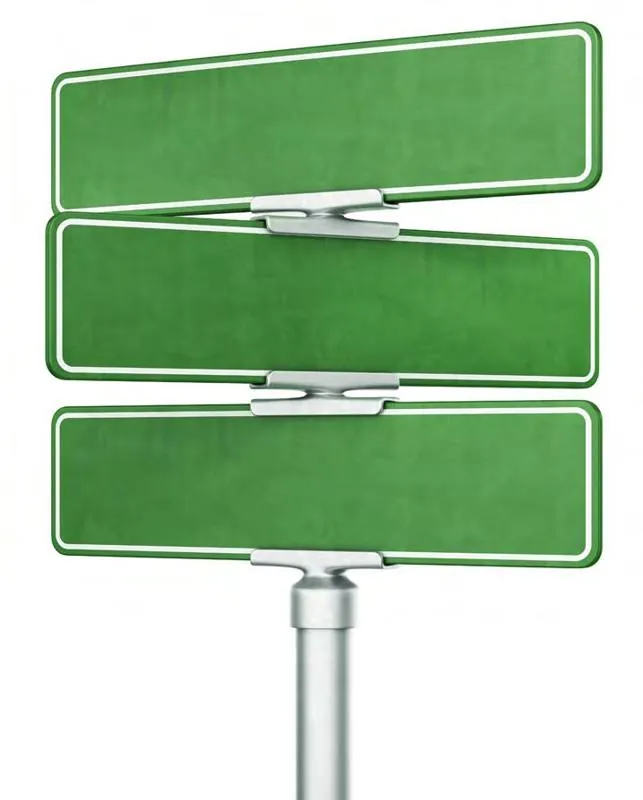

Leading Yourself First
The hardest and most important job you’ll ever have
Jared L. ScottAuthentic Leadership Solutions
Start the climbWhat comes to mind when you hear the word “leader”?
None of them waited for a title. Leadership isn’t a job description or a corner office. It’s the way you carry yourself when life gets heavy, and the difference you make for the people around you.
Matthew 20:26–28“Whoever wants to become great among you must be your servant.”
Serve first
Jesus had every right to be served. Instead, He picked up a towel and a basin and washed the dirty feet of the men who followed Him, including the one who would betray Him that same night. That is the picture of leadership this whole talk is built on.
Leading like that doesn’t start with being in charge. It starts with asking yourself two honest questions.
Do I want to lead for the right reasons?
Is this about respect, control, or proving someone wrong? Or is it about becoming someone others can count on?
Am I willing to serve first?
Showing up early, doing the unnoticed job, helping a neighbor down the hall without keeping score.
Before you lead others, you must learn to lead yourself
Every morning you stand at a fork in the road.
One way is easy: hit snooze, skip the appointment, blame the bus, spend the money, say the thing you’ll regret. The other way is harder, and it’s the only one that goes up.
Nobody else can walk that road for you. A caseworker can point. A friend can encourage. God will walk with you. But your feet have to move.
Leading yourself looks like
- Getting up when you said you would
- Showing up on time, or calling ahead when you can’t
- Telling the truth, even when it costs you
- Handling your money on purpose
- Choosing your words when you’re angry
- Asking for help before things fall apart
Three truths for the climb
These three truths are your trail markers. Each one comes with a practice so it doesn’t stay an idea on a screen.
- 1
You’re always leading someone
Even if it’s just you. Every choice teaches someone, starting with the person in the mirror.
Practice: the self-leadership check-in - 2
Ownership is the opposite of blame
You can’t change what you won’t own. Owning it is where your power comes back.
Practice: the ownership reset - 3
Right action beats right words
People trust what you do over time, not what you promise today.
Practice: the keep-your-word tracker and an accountability partner

Lead yourself. Own it. Act with integrity.
Somebody is always watching how you handle a hard day. Your kids. Your roommate. The new resident who just moved in down the hall. Your coworkers. And you. You are learning from yourself every day, whether the lesson is “I quit when it’s hard” or “I keep going.”
Proverbs 4:23“Above all else, guard your heart, for everything you do flows from it.”
Leadership is not about being in charge. It’s about taking care of what’s been entrusted to you.
What’s been trusted to you right now?
Self-leadership check-in
Take a quiet minute. In your head, give yourself a number from 1 to 5 on each of these. 1 means “not yet,” 5 means “I’ve got this.” Nobody has to share their score.
Blame is the oldest move in the book. Literally.
When God asked Adam what happened in the garden, Adam didn’t say, “I did it.” He said, “The woman you gave me…” In one sentence he blamed Eve and God. Eve blamed the serpent. Nobody owned anything, and nothing got fixed.
We still do it. The bus was late. My boss has it out for me. My caseworker didn’t call back. Some of that may even be true. But every time we point, we hand our power to someone else. Ownership takes it back.
Genesis 3:12“The woman you gave me…”
Blame is easy. Ownership is where change happens.
Blame says
“It’s not my fault, so it’s not my problem.”
Excuses say
“It’s my problem, but I couldn’t help it.”
Ownership says
“Whatever happened, what I do next is on me.”
Ownership in practice
Ownership starts with the words you use. Read each blame line out loud and let the room flip it before you reveal the answer.
The ownership reset
When you mess up, and you will, work through these four steps in order. It works at your job, at home, with your kids, and with God.
- Own it. “That was me.” No “but.”
- Say it. Tell the person you affected. Out loud, not just in your head.
- Fix it. Make it right as much as you can. Repay, redo, repair.
- Learn it. What will I do differently next time? Then do it.
Galatians 6:5“For each one should carry their own load.”
You don’t have to be the loudest person in the room. You have to be the one who keeps showing up.
Work boots don’t get worn in on the first day. They get that way one shift at a time. Trust works the same way. Nobody believes a big speech from someone who keeps missing. But people start to notice the person who does the small things right, day after day, when nobody is clapping.
James 1:22“Be doers of the word, not hearers only.”
Talk is cheap. Jesus did more than He said.
He fed the hungry, touched the sick, and sat with people everyone else avoided. His actions made His words believable. Ours can too.
Small things that build big trust
- Answer the phone, or call back the same day
- Pay back what you borrowed, when you said you would
- Finish the chore before you’re reminded
- Keep your word on the little stuff
Keep your word to yourself first
If you can’t keep a promise to yourself, it gets hard to keep one to anyone else. Start with promises so small you can’t talk yourself out of them, and track them every day.
Here’s what one week might look like
The two-miss rule
Miss once, it’s a slip. Get back on it the next day without beating yourself up. Miss twice in a row, it’s a pattern starting. That’s the moment to tell your accountability partner, not hide it.
Don’t climb alone
Ecclesiastes 4:9–10“Two are better than one… If either of them falls down, one can help the other up.”
Owning your life doesn’t mean doing it alone. It means inviting someone close enough to tell you the truth. Accountability isn’t someone watching you fail. It’s someone helping you keep the promises you already made.
Pick the right person
- Someone who will be honest with you, not just agree with you
- Someone moving in the direction you want to go
- A mentor, a staff member, a pastor, or a steady friend
- Someone you can meet or call once a week
Five questions for your weekly check-in
- Did I keep my word this week? Where didn’t I?
- Is there anything I’m blaming someone else for?
- What am I hiding or avoiding?
- Where did I see God at work?
- What is my one next step before we talk again?
What asking sounds like
“I’m working on keeping my word. Would you check in with me once a week? You have my permission to ask me hard questions and tell me the truth. I’ll answer honestly.”
Maybe it was never the past
Maybe you didn’t grow up with much.
Maybe nobody pushed you.
Maybe no one showed you how to get ahead.
Maybe you started at the bottom.
Maybe you had to figure it out alone.
Maybe it took longer than it should have.
Maybe people made assumptions.
Maybe you got passed over.
Maybe you got used to being overlooked.
Maybe your family didn’t believe in college.
Maybe you took the first job you could get.
Maybe you had to work twice as hard just to be seen.
Maybe your past wasn’t fair.
Maybe your start wasn’t ideal.
Maybe your story didn’t go the way it was supposed to.
Maybe that’s all true.
Maybe none of it’s your fault.
Or maybe…
It’s time to stop letting it hold you back.
That can be hard to hear. It’s meant to be honest, not harsh. What happened to you was real, and some of it wasn’t fair. God sees every bit of it.
But here is the truth that sets people free: your past explains your story. It doesn’t get to write the next chapter. That pen is in your hand now.
Lamentations 3:22–23“His compassions never fail. They are new every morning.”
What happened, and what’s mine now
Ownership doesn’t mean pretending the hard things didn’t happen. It means sorting them honestly.
What happened to me
Things I didn’t choose and couldn’t control
- How I was raised
- What others did to me
- Doors that got shut
- Losses I didn’t see coming
What’s mine to own now
Choices, habits, and next steps that are in my hands
- How I spend today
- Who I let speak into my life
- Whether I ask for help
- What I do after I fall
If this brings up more than you expected, you don’t have to carry it alone. Talk with a staff member, your counselor, or your pastor.
Sometimes we don’t see the climb
When you’re halfway up a mountain, all you can see is the next rock in front of you. Your legs hurt, the top looks just as far as it did yesterday, and it’s easy to believe you haven’t moved at all.
Psalm 121:1–2“I lift up my eyes to the mountains, where does my help come from? My help comes from the Lord.”
Progress isn’t always visible. But God sees the whole picture.
Some days, progress looks like not going back. Not making the call you used to make. Paying one bill. Saying no once. Those days count. They’re the climb.
Zoom out to see the progress
Where I started
What was life like the day you arrived here?
Where I am today
What’s different now, even a little?
Where I’m headed
What does the top look like for you? Steady work, your own place, your family together, a stronger faith?
Philippians 1:6“He who began a good work in you will carry it on to completion.”
You may not feel it, but you’ve come further than you know.
Write to the future you
Here’s your assignment for this week. On paper, write a letter to the person you’ll be one year from today. Seal it, and give it to someone you trust to hand back to you in a year.
Dear me,
- Right now I’m…
- The hardest part is…
- I’m choosing to let go of…
- I’m fighting for…
- I hope by the time you read this…
What’s your next move?
Big changes are made of small first steps. Don’t plan the whole mountain. Plan the next step, and make it one you can take in the next seven days.
- My one next stepSmall enough to do this week
- When I’ll do itA day and a time
- Who I’ll tellSay it out loud to someone
- What might get in my wayBe honest
- What I’ll do if it doesDecide now, not in the moment
This is your mountain
Hebrews 12:1–2“Let us run with perseverance the race marked out for us, fixing our eyes on Jesus.”
Walk with Christ and lead like Him.
Nobody else can climb it for you, and you were never meant to climb it without Him. Keep your eyes up and your feet moving.
You were made to lead
Not someday, when things are perfect. Today, right where you are. Start with yourself: your mornings, your words, your promises. Own what’s yours. Let your actions do the talking. And trust that God isn’t finished with you yet.
Lead yourselfOwn itAct with integrity